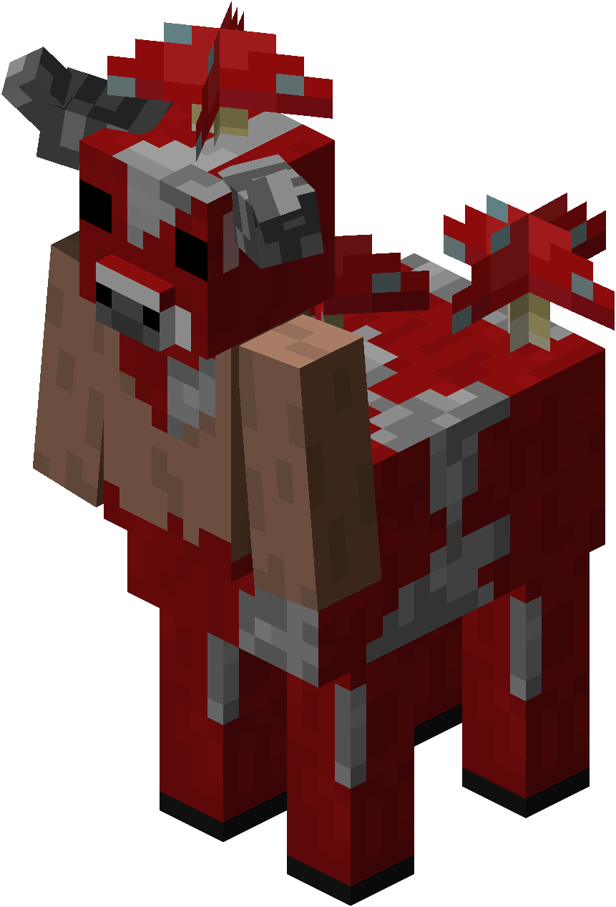

STAGE 3：ミノシュルーム Minoshroom
牛とキノコの合体事故。迷宮の最下層で待っている。

場所 沼地の地下「ラビリンス」最下層HP 120危険度 ★★☆☆☆解放 炎の沼地（ストロガノフを食べる）
ラビリンスの歩き方 本体より迷宮が本番
沼地の地面にある小さい丘が入口。内部は2層構造で、1層から鉄格子に囲まれた穴を通って2層へ（層間は岩盤なので真下掘り不可）。ボスは2層の、柵で囲まれたキノコ部屋にいる。
- 目印ルールを決める：松明は右壁だけに置く、など。帰り道は松明の逆向きに進めば戻れる
- 罠注意：チェスト部屋には感圧板やトリップワイヤー式のTNT罠。鉄格子の先のチェストはワイヤーを切ってから開ける
- 食料：ミノタウロスが落とす「生ミーフ」は焼けばステーキ。チェストの「迷宮ウエハース」も非常食になる
迷宮マップの作り方
- 迷宮マップフォーカスを入手 ラビリンス内のチェスト、またはミノタウロスのレアドロップ
- 空の迷宮マップを作る フォーカスを中央に紙8枚で囲む（魔法の地図と同じ作り方）
- 迷宮の中で右クリック 今いる階層の地図が描かれる。階層ごとに1枚ずつ作る
📌 地図上で「入り口のない灰色の四角」が見えたら、それが秘密の宝物庫。壁を掘って入るとメイズブレイカー（迷宮の石を高速で掘れる専用ツルハシ）やエメラルド、スティールリーフが手に入る。
📌 強化版の鉱石マップ：迷宮マップに鉄ブロック・金ブロック・ダイヤブロックを組み合わせてクラフトすると、迷宮内の鉱石や宝物の位置まで見えるようになる。
倒し方
- 突進攻撃は横に避けると壁にぶつかって隙ができる。そこを叩く
- 周囲のミノタウロス（通常個体）を先に片付けてから挑むと事故が減る
- 部屋の四隅のチェストも忘れずに回収
松明を大量に、食料、目印用ブロック。迷宮マップフォーカスを拾ったらその場で地図を作ると帰りが安全
🎁 戦利品：ミーフストロガノフ（食べると炎の沼地に入れる許可証。自作不可のボスドロップ専用食）、ダイヤモンドのミノタウル斧、トロフィー
「ミーフ」は Minotaur（ミノタウロス）＋ Beef（牛肉）の造語。つまりこの料理、材料が……お察しください。